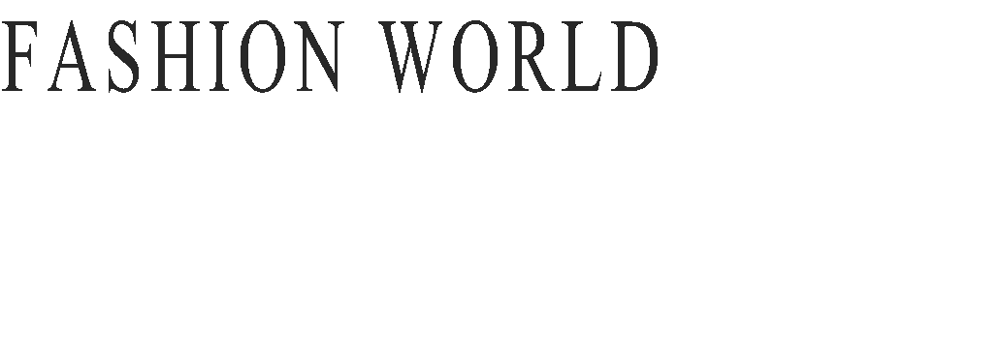
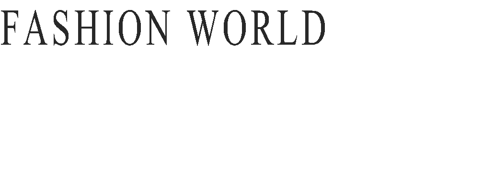
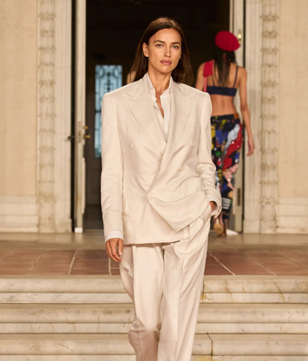
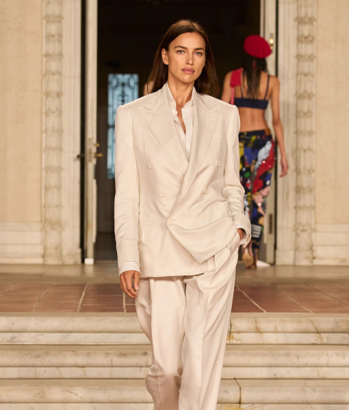
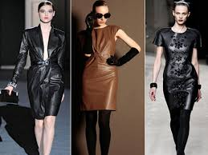
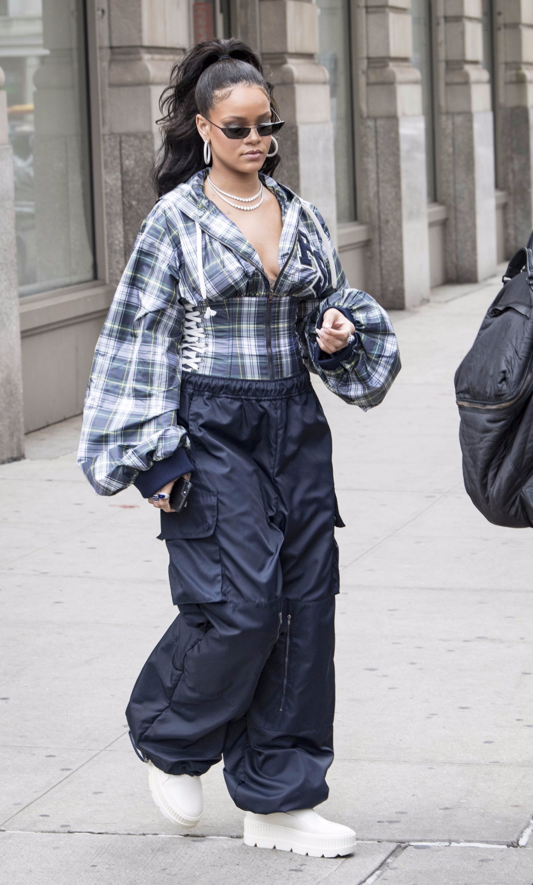
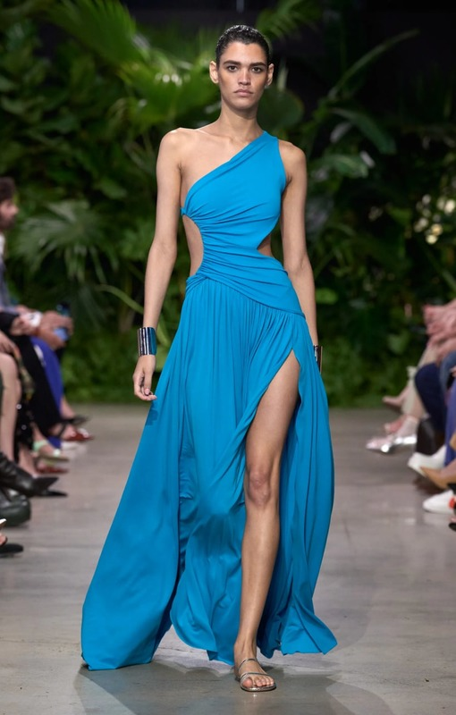

.jpg) 

 

1. Расслабленный костюм
Костюм — тот вид одежды, который давно не относится к
какому-то конкретному формату гардероба, например
,
официальному или офисному. За последние несколько лет мы
привыкли носить костюмы не только на встречи и совещания, но
и в повседневной жизни. В новом сезоне на смену строгим
формам и приталенным жакетам придут более расслабленные
силуэты. Их дополнит ассиметричный крой, широкая линия плеч
и низкая талия у брюк и юбок.
.jpg)
2. Кожаное платье
Кожа и не думала покидать «хит-парады» трендов.
Если в прошлых сезонах акцент был на брюках и плащах, то в 2023 настала очередь платьев.
Кожаное платье — тот редкий предмет гардероба, который всегда выглядит эффектно и стильно сам по себе.
В этом году дизайнеры предлагают нам поэкспериментировать с кроем и силуэтом: в моде разнообразие.
Есть как экстравагантные модели на одно плечо с необычным принтом, так более классические варианты — кожаные сарафаны, которые можно сочетать с женственными блузами.
Кожаные платья, к слову, отлично подойдут для корпоратива.


3.Брюки карго
Низкая посадка, свободные силуэты и обилие карманов: мы снова будем носить брюки карго.
Эта вещь органично встроилась в современный женский гардероб, обозначив актуальную моду на спорт-шик.
Образы с карго могут быть как более женственными, так и более дерзкими.
Всё зависит от того, какую модель выбрать и с чем её носить.
Например, вы можете отдать предпочтение шёлковым брюкам в глубоком модном цвете — шоколадно-коричневом, чёрном или бежевом — и подобрать к ним элегантную водолазку или блузу.
Или остановиться на более бунтарском варианте, где будет подчёркнутый оверсайз, объёмные карманы и потёртости.

4.Вырезы и разрезы
Разрезы и вырезы в самых неожиданных местах — на талии и руках,
в области бёдер и груди — одна из главных (и самых необычных) тенденций на грядущий сезон.
Фигурные вырезы на платьях, комбинезонах и пиджаках добавляют образу фактуру и чувственность.
Если вы выберете одежду с таким элементом, то дополнительные аксессуары и декор не понадобятся.
Обувь в этом случае лучше подобрать в цвет наряда или выбрать нейтральную.